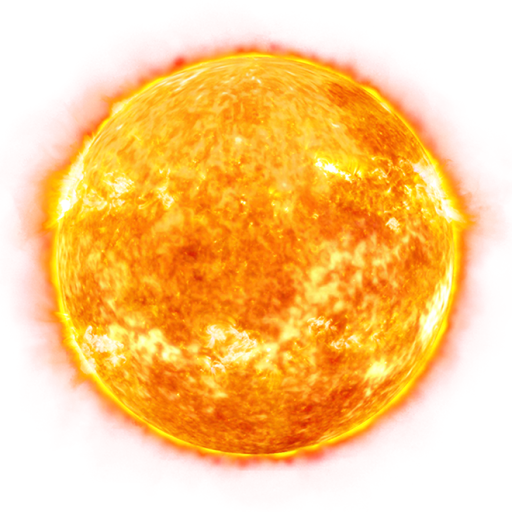
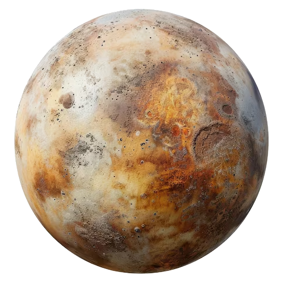
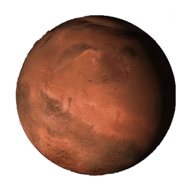
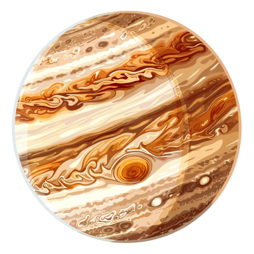
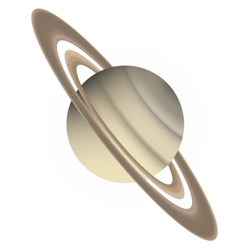
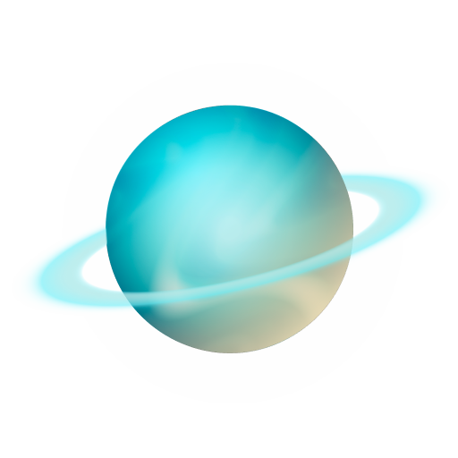
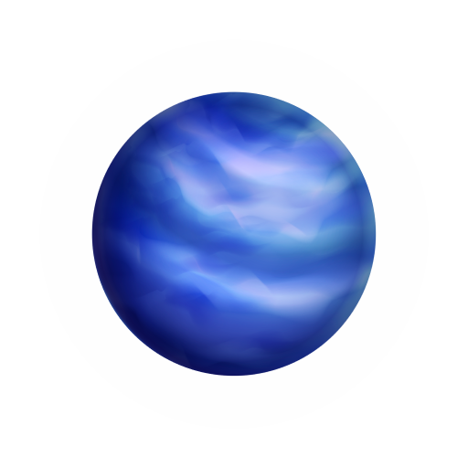
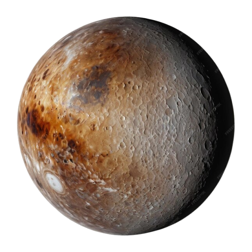

BETÖLTÉS
Üdvözlünk a Naprendszerünk bemutatására készült oldalon!
További részleteket a leírások után található linkekre kattintva érhetsz el:
Ha további segítségre van szükséged, kattints a jobb felső sarokban lévő kérdőjel ikonra.
Nap
A Nap a naprendszer központi csillaga, hatalmas hő- és fényforrás. Tömege a naprendszer teljes tömegének 99,86%-át teszi ki. Hőjét és energiáját nukleáris fúzióból nyeri, amely az egész naprendszer életének alapja.
További információért kattints ide
Merkúr
A Merkúr a Naphoz legközelebbi és legkisebb bolygó. Nincs légköre, felszíne tele van kráterekkel. Nappali hőmérséklete extrém magas, éjszaka viszont rendkívül hideg, ami miatt az egyik legszélsőségesebb bolygó.
További infókért kattints ide
Vénusz
A Vénusz a Naprendszer legforróbb bolygója, sűrű szén-dioxid légkörével. Légkörében savas esők hullanak. A felszíni hőmérséklet extrém magas, és forgása retrográd, azaz az óramutató járásával ellentétes.
További infókért kattints ide

Föld
A Föld az egyetlen ismert bolygó, ahol élet létezik. Változatos felszíne van, óceánokkal és kontinensekkel. Légköre nitrogénből és oxigénből áll, ami ideális az élőlények számára. Holdja stabilizálja tengelyének dőlését.
További infókért kattints ide
Mars
A Mars vörös színét a felszínén található vas-oxidnak, azaz rozsdának köszönheti. Hűvös és száraz, de múltbéli vízfolyások nyomai láthatók. Két apró holdja van, és az emberiség egyik fő célpontja a jövőbeli űrkutatásban.
További infókért kattints ide
Jupiter
A Jupiter a Naprendszer legnagyobb bolygója, főleg hidrogénből és héliumból áll. Hatalmas viharai közül a legismertebb a Nagy Vörös Folt. Több mint 75 holdja van, köztük a nagyobbak a Galilei-holdak.
További infókért kattints ide
Szaturnusz
A Szaturnusz jellegzetes gyűrűiről híres, amelyek jégből, sziklából és porból állnak. A bolygó főként hidrogénből és héliumból épül fel. Több mint 80 ismert holdja van, köztük a legnagyobb a Titán.
További infókért kattints ide
Uránusz
Az Uránusz különlegessége, hogy oldalára dőlve kering a Nap körül. Főként jégből és gázból áll, kékeszöld színét a légkörében lévő metán adja. 27 holdja van, és gyűrűrendszere is létezik, bár halványabb, mint a Szaturnuszé.
További infókért kattints ide
Neptunusz
A Neptunusz a Naprendszer legtávolabbi bolygója. Sötétkék színe a metán légkörének köszönhető. Erős szelei és viharai vannak, például a Nagy Sötét Folt. Több mint egy tucat holdja van, legnagyobb közülük a Triton.
További infókért kattints ide
Pluto
A Plútó törpebolygó a Kuiper-övben, egykor a Naprendszer kilencedik bolygója volt. Jégből és kőzetből áll, felszínén nitrogénjég található. Keringése elnyúlt, öt holdja van, legnagyobb a Charon. Felszínén hegyek és gleccserek utalnak geológiai aktivitásra.
További infókért kattints ide
1